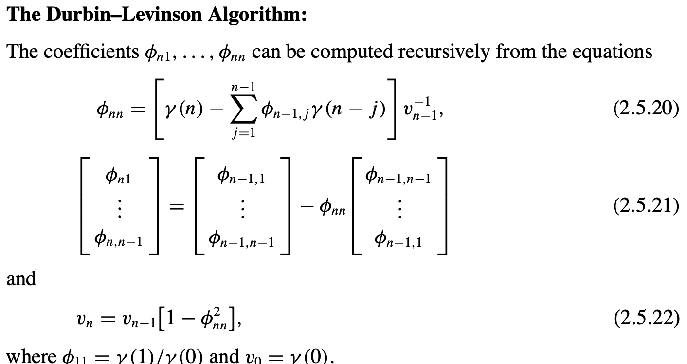

time series
view markdownhigh-level
basics
- usually assume points are equally spaced
- modeling - for understanding underlying process or predicting
- nice blog, nice tutorial, Time Series for scikit-learn People
- noise, seasonality (regular / predictable fluctuations), trend, cycle
- multiplicative models: time series = trend * seasonality * noise
- additive model: time series = trend + seasonality + noise
- stationarity - mean, variance, and autocorrelation structure do not change over time
- endogenous variable = x = independent variable
- exogenous variable = y = dependent variable
- changepointe detection / Change detection - tries to identify times when the probability distribution of a stochastic process or time series changes
libraries
- pandas has some great time-series functionality
- skits library for forecasting
high-level modelling
- common methods
- decomposition - identify each of these components given a time-series
- ex. loess, exponential smoothing
- frequency-based methods - e.g. look at spectral plot
- (AR) autoregressive models - linear regression of current value of one or more prior values of the series
- (MA) moving-average models - require fitting the noise terms
- (ARMA) box-jenkins approach
- decomposition - identify each of these components given a time-series
- moving averages
- simple moving average - just average over a window
- cumulative moving average - mean is calculated using previous mean
- exponential moving average - exponentially weights up more recent points
- prediction (forecasting) models
- autoregressive integrated moving average (arima)
- assumptions: stationary model
- autoregressive integrated moving average (arima)
similarity measures
- An Empirical Evaluation of Similarity Measures for Time Series Classification (serra et al. 2014)
- lock-step measures (Euclidean distance, or any norm)
- can resample to make them same length
- feature-based measures (Fourier coefficients)
- euclidean distance over all coefs is same as over time-series, but we usually filter out high-freq coefs
- can also use wavelets
- model-based measures (auto-regressive)
- compare coefs of an AR (or ARMA) model
- elastic measures
- dynamic time warping = DTW - optimallt aligns in temporal domaub ti nubunuze accumulated cost
- can also enforce some local window around points
- Every index from the first sequence must be matched with one or more indices from the other sequence and vice versa
- The first index from the first sequence must be matched with the first index from the other sequence (but it does not have to be its only match)
- The last index from the first sequence must be matched with the last index from the other sequence (but it does not have to be its only match)
- The mapping of the indices from the first sequence to indices from the other sequence must be monotonically increasing, and vice versa, i.e. if
j > iare indices from the first sequence, then there must not be two indicesl > kin the other sequence, such that indexiis matched with indexland indexjis matched with indexk, and vice versa
- edit distance EDR
- time-warped edit distance - TWED
- minimum jump cost - MJC
- dynamic time warping = DTW - optimallt aligns in temporal domaub ti nubunuze accumulated cost
- lock-step measures (Euclidean distance, or any norm)
book1 (A course in Time Series Analysis) + book2 (Intro to Time Series and Forecasting)
ch 1
- when errors are dependent, very hard to distinguish noise from signal
- usually in time-series analysis, we begin by de-trending the data and analyzing the residuals
- ex. assume linear trend or quadratic trend and subtract that fit (or could include sin / cos for seasonal behavior)
- ex. look at the differences instead of the points (nth order difference removes nth order polynomial trend). However, taking differences can introduce dependencies in the data
- ex. remove trend using sliding window (maybe with exponential weighting)
- periodogram - in FFT, this looks at the magnitude of the coefficients (but loses the phase information)
ch 2 - stationary time series
- in time series, we never get iid data
- instead we make assumptions
- ex. the process has a constant mean (a type of stationarity)
- ex. the dependencies in the time-series are short-term
- autocorrelation plots: plot correlation of series vs series offset by different lags
- formal definitions of stationarity for time series ${X_t}$
- strict stationarity - the distribution is the same across time
- second-order / weak stationarity - mean is constant for all t and, for any t and k, the covariance between $X_t$ and $X_{t+k}$ only depends on the lag difference k
- In other words, there exists a function $c: \mathbb Z \to \mathbb R$ such that for all t and k we have $c(k) = \text{cov} (X_t, X_{t+k})$
-
strict stationary and $E X_T^2 < \infty \implies$ second-order stationary
- ergodic - stronger condition, says samples approach the expectation of functions on the time series: for any function $g$ and shift $\tau_1, … \tau_k$:
- $\frac 1 n \sum_t g(X_t, … X_{t+\tau_k}) \to \mathbb E [g(X_0, …, X_{t+\tau_k} )]$
- causal - can predict given only past values (for Gaussian processes no difference)
ch 3 - linear time series
note: can just assume all have 0 mean (otherwise add a constant)
- AR model $AR(p)$: \(X_t = \sum_{i=1}^p \phi_i X_{t-i}+ \varepsilon_t\)
- $\phi_1, \ldots, \phi_p$ are parameters
- $\varepsilon_t$ is white noise
-
stationary assumption places constraints on param values (e.g. processes in the $AR(1)$ model with $ \phi_1 \ge 1$ are not stationary) - looks just like linear regression, but is more complex
- if we don’t account for issues, things can go wrong
- model will not be stationary
- model may be misspecified
-
$E(\epsilon_t X_{t-p}) \neq 0$
- this represents a set of difference equations, and as such, must have a solution
- if we don’t account for issues, things can go wrong
-
ex. $AR(1)$ model - if $ \phi < 0$, then soln is in terms of past values of {$\epsilon_t$}, otherwise it is in terms of future values - ex. simulating - if we know $\phi$ and ${\epsilon_t}$, we still need to use the backshift operator to solve for ${ X_t }$
-
ex. $AR(p)$ model - if $\sum_j \phi_j $< 1, and $\mathbb E \epsilon_t < \infty$, then will have a causal stationary solution - backshift operator $B^kX_t=X_{t-k}$
- solving requires using the backshift operator, because we need to solve for what all the residuals are
- characteristic polynomial $\phi(a) = 1 - \sum_{j=1}^p \phi_j a^j$
- $\phi(B) X_t = \epsilon_t$
- $X_t=\phi(B)^{-1} \epsilon_t$
- can represent $AR(p)$ as a vector $AR(1)$ using the vector $\bar X_t = (X_t, …, X_{t-p+1})$
- note: can reparametrize in terms of frequencies
- MA model $MA(q)$: $ X_t = \sum_{i=1}^q \theta_i \varepsilon_{t-i} + \varepsilon_t$
- $\theta_1 … \theta_q$ are params
- $\varepsilon_t$, $\varepsilon_{t-1}$ are white noise error terms
- harder to fit, because the lagged error terms are not visible (also means can’t make preds on new time-series)
- $E[\epsilon_t] = 0$, $Var[\epsilon_t] = 1$
- much harder to estimate these parameters
- $X_t = \theta (B) \epsilon_t$ (assuming $\theta_0=1$)
- ARMA model: $ARMA(p, q)$: $X_t = \sum_{i=1}^p \phi_i X_{t-i} + \sum_{i=1}^q \theta_i \varepsilon_{t-i} + \varepsilon_t$
- ${X_t}$ is stationary
- $\phi (B) X_t = \theta(B) \varepsilon_t$
- $\phi(B) = 1 - \sum_{j=1}^p \phi_j B^j$
- $\theta(B) = 1 + \sum_{j=1}^{q}\theta_jz^j$
- causal if $\exists { \psi_j }$ such that $X_t = \sum_{j=0}^\infty \psi_j Z_{t-j}$ for all t
- ARIMA model: $ARIMA(p, d, q)$: - generalizes ARMA model to non-stationarity (using differencing)
ch 4 + 8 - the autocovariance function + parameter estimation
- estimation
- pure autoregressive
- Yule-walker
- Burg estimation - minimizing sums of squares of forward and backward one-step prediction errors with respect to the coefficients
- when $q > 0$
- innovations algorithm
- hannan-rissanen algorithm
- pure autoregressive
- autocovariance function: {$\gamma(k): k \in \mathbb Z$} where $\gamma(k) = \text{Cov}(X_{t+h}. X_t) = \mathbb E (X_0 X_k)$ (assuming mean 0)

- Yule-Walker equations (assuming AR(p) process): $\mathbb E (X_t X_{t-k}) = \sum_{j=1}^p \phi_j \mathbb E (X_{t-j} X_{t-k}) + \underbrace{\mathbb E (\epsilon_tX_{t-k})}{=0} = \sum{j=1}^p \phi_j \mathbb E (X_{t-j} X_{t-k})$
- ex. MA covariance becomes 0 with lag > num params
-
can rewrite the Yule-Walker equations
- $\gamma(i) = \sum_{j=1}^p \phi_j \gamma(i -j)$
- $\underline\gamma_p = \Gamma_p \underline \phi_p$
- $(\Gamma_p)_{i, j} = \gamma(i - j)$
- $\hat{\Gamma}_p$ is nonegative definite (and nonsingular if there is at least one nonzero $Y_i$)
- $\underline \gamma_p = [\gamma(1), …, \gamma(p)]$
- $\underline \phi_p = (\phi_1, …, \phi_p)$
- this minimizes the mse $\mathbb E [X_{t+1} - \sum_{j=1}^p \phi_j X_{t+1-j}]^2$
- use estimates to solve: $\hat{\underline \phi}_p = \hat \Sigma_p^{-1} \hat{\underline r}_p $
- the innovations algorithm
- set $\hat X_1 = 0$
- innovations = one-step prediction errors $U_n = X_n - \hat X _n$
- mle (ch 5.2)
- eq. 5.2.9: Gaussian likelihood for an ARMA process
- $r_n = \mathbb E[(W_{n+1} - \hat W_{n+1})^2]$
multivariate time-series ch 7
- vector-valued time-series has dependencies between variables across time
- just modeling as univariate fails to take into account possible dependencies between the series
neural modeling
- see pytorch-forecasting for some new state-of-the-art models